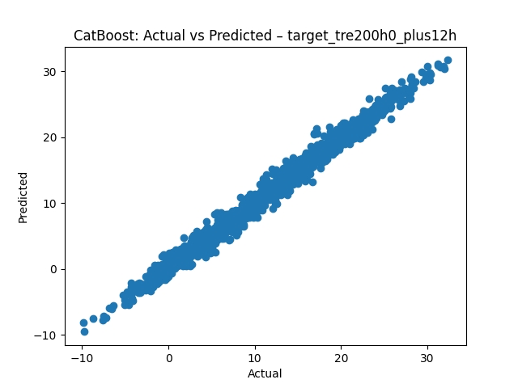

Rolling validation is meaningful when chronology can be recovered.
Machine learning · Forecasting · University team project
How does model complexity change as the forecast horizon gets longer?
A supervised machine learning project comparing interpretable and non-linear models for 12-, 24- and 48-hour temperature forecasting in Bern.
Distributed station signals
Best 12h test MAE≈ 1.51°CBoosting
10weather stations
7,579training observations
92input features
3forecast horizons
3model families
This was a university team project developed for the Machine Learning course at the University of Geneva. It was not an operational weather system, an official forecast or work commissioned by MeteoSwiss.
01 · Forecasting question
What does it take to predict local temperature from a distributed weather network?
Future temperature in Bern was predicted from 10 Swiss stations and temperature, humidity, radiation, precipitation, pressure, wind, sunshine and temporal variables.
BaselGenevaInterlakenSionSt. GallenDavosZermattAndermattLa DôleLugano
Station measurementsBern12h · 24h · 48h
Schematic network representation; not a geographic map.
02 · Modelling decision
Why this was not treated as a conventional time series
The dataset contains hour and season, but no complete timestamp or recoverable chronology. Observations did not necessarily form a continuous sequence, so the project was treated as supervised regression.
Hourly observations, no recoverable chronology and held-out evaluation drove the method choice.
Using a time-series model is not automatically correct just because the target is in the future.
03 · Data-quality decisions
Data quality decisions before modelling
Missing values
150 rows had at least one missing value. Missingness was low and largely unstructured, so incomplete rows were removed.
Outliers
Extreme wind, precipitation, sunshine and radiation values were often physically plausible. RobustScaler was considered without deleting them.
Duplicates
No duplicated observations were found, so no duplicate-removal step was required.
04 · Data structure
Many signals, repeated across station contexts.
Measurements of the same meteorological quantity across nearby stations were often strongly correlated.
tre200h0_GVEtre200h0_BAStre200h0_DAVSame physical quantity · different station context05 · Feature engineering
Adding useful structure without unnecessary complexity
Cyclical hour encoding
sin(hour) and cos(hour) preserve the fact that hour 23 is close to hour 0.
0–23Absolute temperature change
Current Bern temperature minus its 24-hour lag captures recent temperature variability.
Δ 24hRegional average
Ten station temperatures became a regional average to capture broader conditions and reduce local noise.
10 → 1Features explored, tested and rejected
Only a small subset of engineered features was retained because additional complexity produced diminishing returns.
- Season cyclical encoding → negligible additional benefit
- Altitude difference → no noticeable improvement
- Temperature–humidity interaction → not retained after combined evaluation
06 · Model ladder
From transparent baseline to non-linear ensemble
- 01Global linear relationships
Linear Regression
Transparent baseline for interpretability and benchmarking.
- 02Scale-sensitive and less stable in sparse regions
KNN
Local non-linear alternative with flexible neighbourhood predictions.
- 03Best-performing family across all horizons
Boosting
Non-linear tree ensemble for interactions, accuracy and feature importance.
Increasing flexibility Decreasing simplicity
Experimental setup
Evaluation designed for interpretable error.
80/20 train-test split · scaling inside the modelling pipeline · cross-validation for hyperparameters · held-out test evaluation · three separate forecast targets.
07 · Model comparison
Model performance across forecast horizons
Test Mean Absolute Error in degrees Celsius. Lower values indicate better forecasts.
Compare a horizon
Scenario values from the project report. Shorter bars indicate lower test MAE.
12h · Boosting has the lowest test MAE.At the shortest horizon, Boosting achieved approximately 1.51°C MAE.
| Horizon | Linear Regression | KNN | Boosting |
|---|---|---|---|
| 12h | 2.06 | 2.06 | 1.51 |
| 24h | 2.01 | 2.15 | 1.87 |
| 48h | 2.54 | 2.56 | 2.40 |
Boosting consistently achieved the lowest MAE.Forecasting became harder from 12h to 48h.Linear Regression remained a useful transparent benchmark.KNN captured local non-linearity but was scale-sensitive.
Actual vs predicted
Predictions remain close to observations, while dispersion grows with horizon.
The extracted CatBoost chart documents the 12-hour comparison. Greater forecast distance corresponded to greater uncertainty.

Feature importance
Short-term forecasts rely more on recent dynamics. Longer horizons rely more on regional context.
Signal12h24h48h
Current temperatureHighBalancedRegional
Regional average temperatureSupportingHighHigh
Recent temperature changeHighBalancedLower
Selected stations, hour, humidity & radiationTemporalBalancedSpatial
Error analysis
Where the model remained less reliable
Prediction errors increased at extreme temperatures; uncertainty grew with horizon; sparse regions were harder for KNN. Accuracy alone does not eliminate forecasting uncertainty.
Typical temperature rangeTighter predictions
Extreme temperature rangeWider error dispersion
Technical workflow
- Raw meteorological data
- Data-quality checks
- Robust preprocessing
- Feature engineering
- Model pipelines
- Cross-validation
- Held-out test
- Diagnostics
Selected implementation logic
Small pieces of code, tied to a modelling decision.
Cyclical encoding makes the proximity between late-night and early-morning hours available to the model.
# cyclical hour encoding
df["hour_sin"] = np.sin(2 * np.pi * df["hour"] / 24)
df["hour_cos"] = np.cos(2 * np.pi * df["hour"] / 24)Interpretation and limitations
Forecasting performance depends on more than model complexity.
Understanding data structure, engineering meaningful features and evaluating uncertainty across horizons were as important as selecting a model. Results are specific to this university project setup, not an operational weather forecast.